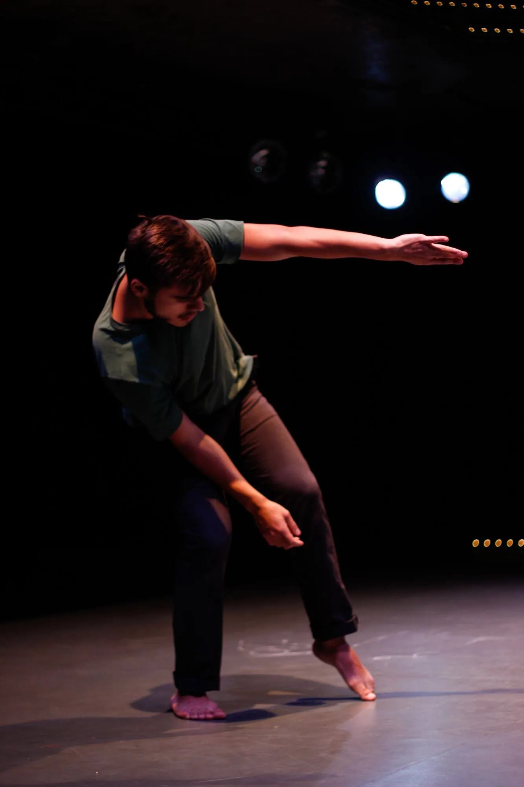

2024
Onde Houver Céu
Nominated for the APCA Award


 Marcus Moreno
Marcus Moreno
2013 — 2024
2024
Nominated for the APCA Award
2023
2021
2021
The title takes up one of the chapters of A Flor da Lua.

Instante-já · 2019
Photo Silvia Machado

2019 / 2022
Nominated for the 2019 APCA Dance Award: Premiere of the Year and Technical Award (lighting and stage design by Hernandes de Oliveira)
Everything that happens in the brain begins in cells known as neurons. Between one neuron and the next there are, in many cases, small gaps, filled with chemicals released each time an electrical impulse fires. They shape the images that come from the human senses and from the flow of our thoughts.
These were some of the triggers for the creation of instante-já, a title inspired by Água Viva by the writer Clarice Lispector, and on poetics that reflect on the passing of time and which, here, are tinged by ideas of perception, memory and image-making from the cognitive sciences. The wish to dance the instant-now deepened when Marcus Moreno met Uruguayan artist Andrea Arobba, through immersion in creative material gathered during an artist residency at the Dance Reference Centre (CRDSP). It is a work born of encounter: with time, with space, with different bodies, with different ways of making dance. A solo built from many presences, in many instants.
Created in 2019 with support from São Paulo's Municipal Dance Fund programme, Municipal Department of Culture.
Air is the non-place where everything will exist Clarice Lispector


2017
This work grows from concrete bodily themes to create sensory images.
From combinations of the body and its singularities, dance, music and light come together to invent possible encounters.
Created with support from ProAC call no. 04/2016, for the production of new dance works and seasons in the State of São Paulo.
2016
This piece was made in short chapters. Just as the moonflower blooms and lasts a single night, the dance expands on its way to an end.
The starting point of this work is the passing of time. Through the metaphor of the moonflower, and inspired by the botanical artist and illustrator Margaret Mee, the dance takes shape from the present instant.
Created within the Casa das Caldeiras Artist Residency Programme (SP), the solo A Flor da Lua premiered in 2016 at Sesc Campinas and toured festivals and showcases such as Tiradentes em Cena (MG), Dança nas Bordas (SP) and Ciclo Solos al Mediodía (Montevideo, UY). In 2019, with support from Fomento à Dança, it was widely presented across the city of São Paulo.



2013
The starting point of this work is the blank canvas, the space of an event about to be filled.
A premiere among the highlights of the year in critic Helena Katz's review, O Estado de S. Paulo
Like a painter who begins with a first mark of paint on the canvas, the dance here comes from a vital inner impulse, from the body's movement.
The wish to reflect on empty spaces in the making of images began with the discussion of the quality of sensations proposed by Alberto Manguel in his book Lendo Imagens, and grew stronger through the work of painter Jackson Pollock, known for subverting the support and letting paint fall onto canvas laid on the floor.
Driven by the act of ‘painting by painting’, moving through form, colour, abstraction and its capacity to become movement, the composition took shape with the urgency and immediacy of dancing. ‘Dripping’, ‘splashing’, ‘(un)staining’, ‘(un)controlling’ are some of the action verbs that prompted a series of short improvisations. A Imagem como Ausência reflects on the presence of what is not necessarily seen or said, in a space where the body is shaped by its own action and seeks its own way of making dance.
Created in 2013 with support from the ProAC First Works call for dance seasons.